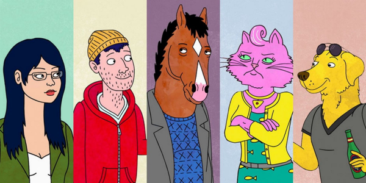

BoJack Horseman

Figure 1: BoJack Horseman Characters
So I just completed watching BoJack Horseman for the third time. Everytime I finish watching it becomes more and more depressing because for some reason, the show reveals several deeply hidden nature of being an individual. Some are pleasant, some are very disturbing and leave you puzzled.
I would rank my favorite characters from the show in the following order:
- Princess Carolyn: I loved it how she was always sincere in her professional life. The story reveals how she rose from nothing. Despite being always busy, she was always there when BoJack needed her.
- Diane Nguyen: I loved her character because I could relate to her a lot. I've always been an introverted person, prefering to stay at the corner of the room. In the first season when she writes the book for BoJack, it shows how she is not in it for the recognition. Her character describes the struggle one goes through, sometimes their entire life trying to figure out what they want from life.
- Todd Chavez: Amidst all the depressing plotlines of the show, it is Todd's humor that brings the balance to the scale. Todd is very simple, although his activities are so dumb and his act is exagerated, it goes very well with the rythm of the show.
Mr. Peanutbutter is a character that I hated in the beginning, especially in the episode where he stole BoJack's thunder by claiming that he stole the 'D' for Diane. I personally feel this is another reason BoJack became more toxic in addition to the abusive childhood he eperienced. It was all bad timing. I wonder how the story would have went if Diane had heard the voicemail before she agreed to marry Mr. Peanutbutter. However, as the story progressed, I developed a liking for the character because I realized that despite being so optimistic at all times, he too had his share of misfortune. The liking developed to that point that when he fucked up in the last few episodes by talking to the press about BoJack, I really was no longer disappointed.
This is probably one of the shows where the protagonist is not actually glorified. BoJack Horseman in portrayed as a extremely toxic individual who is completely washed up and is an alcoholic and heroin addict, the two things that become the reason for his doom. He is never able to develop good relationship with the people around him and always runs away at the face of problems. The show amazingly describes why he is the way he is. The turning point occurs when he finally accepts that he has a problem and goes to rehab. After returning from rehab he stays clean for several months and is able to change his life for good but his deeds from the past returns to haunt him and hits him very hard.
“If you want a happy ending, that depends, of course, on where you stop your story.” — Orson Welles, The Big Brass Ring
The above quote is very true in the case of this show. If you are the kind of person who prefers a happy ending, you should end at the episode "The Face of Depression", where BoJack comes out of rehab, travels around to apologize the people he hurt and makes amends. If you go further, you get two more endings:
- "The view from halfway down" - This is the tragic ending where BoJack dies.
- "Nice while it lasted" - The last episode, where everyone gets a happy ending except for BoJack and this gives a very unsettling feeling and leaves you really depressed.

Figure 2: Mr. Blue…
In the last episode when Diane and BoJack are sitting and talking on the roof, BoJack says that this could be last time they ever talk. Diane then gets up to leave. But BoJack stops her to tell a mundane story about something that happend in prison. This shows how he wants this last moment to last just a bit longer. After that Diane tries to say something but then stops. May be she just did not want to go through everything again. The final song that puts the show to an end, "Mr. Blue" resonates synchronously with the unsettling state in which you are caught.